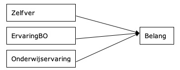
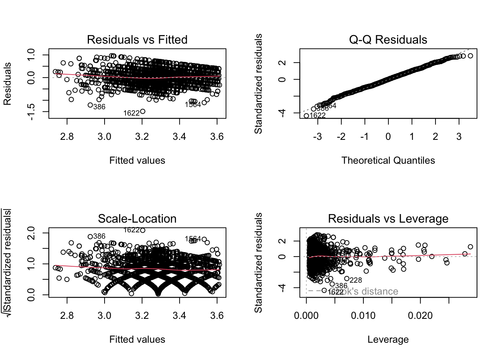
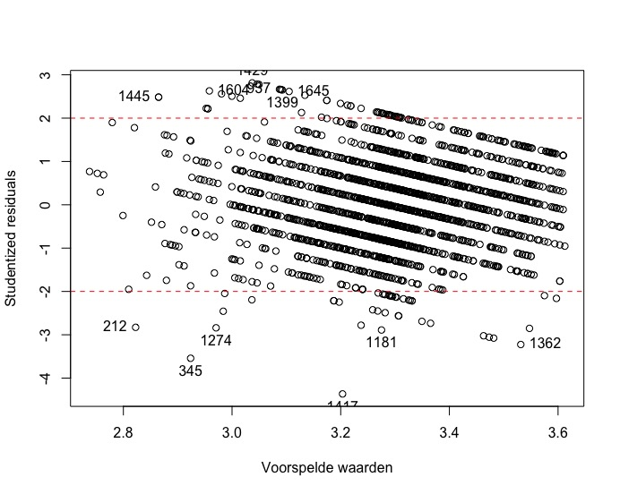
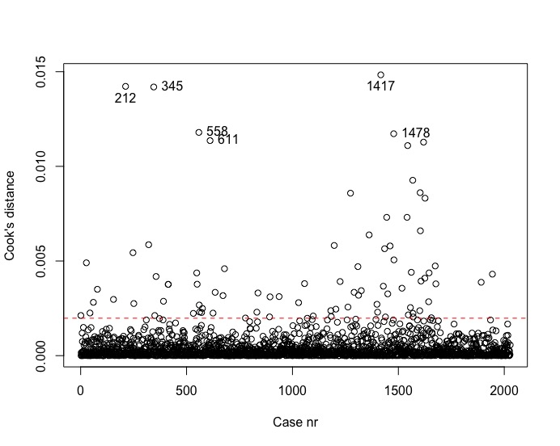

load("CivedZSO7.RData")
source("OLP2 Functies.R")
library(car)ZSO 7
OPDRACHTEN
Het databestand bevat de gegevens van de lerarenbevraging uit de ‘Civic Education Study’. Deze studie is een internationale studie naar burgerschapsopvoeding (vergelijkbaar met PISA onderzoek, maar dan over een ander onderwerp). Daarbij werden zowel 14-jarigen als leraren en schoolhoofden in verschillende landen over dit thema bevraagd.
Concreet bevat dit bestand een selectie van de gegevens uit de leerkrachtenbevraging. Meerbepaald bevat het bestand o.a. de volgende variabelen:
-‘Ondmeth1’: burgerschapsopvoeding als afzonderlijk vak; -‘Onderwijservaring’: aantal jaren onderwijservaring; -‘ErvaringBO’: aantal jaren ervaring in het geven van burgerschapsopvoeding; -‘DiplomaBO’: respondent heeft een diploma in een discipline die gerelateerd is aan burgerschapsopvoeding; -‘NavormBO’: respondent heeft navorming genoten in een discipline die gerelateerd is aan burgerschapsopvoeding; -‘Leeftijd’: leeftijd van de leraar (als continue variabele); -‘Leeftijd6’: leeftijd van de leraar (ingedeeld in 6 categorieën); -‘Belang’: belang dat gehecht wordt aan het geven van kennisinhouden bij burgerschapsopvoeding; -‘Zelfver’: zelfvertrouwen in het geven van kennisinhouden bij burgerschapsopvoeding.
Er bestaan verschillende psychologische theorieën die stellen dat een persoon voornamelijk belang hecht aan zaken waarvan hij of zij ook zeker is dat hij of zij ze kan uitvoeren. Als we dit toepassen op deze data, dan kan je veronderstellen dat zelfvertrouwen in het geven van kennisinhouden aangaande burgerschapsopvoeding bij leerkrachten (‘Zelfver’) een goede voorspeller is van het belang dat leerkrachten hechten aan het geven van kennisinhouden (‘Belang’).
In de onderzoeksgroep waar je werkt stelt iemand anders dat het veel eerder te maken heeft met onderwijservaring (‘Onderwijservaring’). Hij veronderstelt dat, als iemand al lang in het onderwijs staat, dat die persoon dan ook meer en meer het belang gaat inzien om bij jongeren expliciet onderwijs te geven aangaande burgerschapsopvoeding (‘Belang’).
1.1 Je zit dus met 2 hypothesen. Je wil deze hypothesen in 2 afzonderlijke analyses toetsen. Voor zelfvertrouwen maak je gebruik van de variabele ‘Zelfver’. Om het effect van het onderwijservaring na te gaan maak je gebruik van de variabele ‘Onderwijservaring’. Aan de hand van welke onderzoekstechniek zou je beide hypothesen afzonderlijk testen en waarom?
1.2 Toets beide hypothesen. Welke conclusies kan je trekken? Wees hierbij zo volledig mogelijk. Kan je deze doortrekken naar de gehele populatie? Van welke variabele kan je zeggen dat die het sterkste een invloed uitoefent op de variabele ‘Belang’?
1.3 We hebben in de dataset de volgende variabelen: ‘Belang’, ‘Zelfver’, ‘ErvaringBO’ en ‘Onderwijservaring’ (aantal jaren onderwijservaring). Teken het onderzoekschema dat bij de volgende onderzoeksvraag past: Is het zo dat het belang dat leerkrachten hechten aan het geven van kennisinhouden bij het vak burgerschapsopvoeding beïnvloed wordt door het zelfvertrouwen, nadat je controleert voor zowel het aantal jaren onderwijservaring in het algemeen als het aantal jaren ervaring in het geven van burgerschapsopvoeding specifiek? Welke onderzoekstechniek hoort hierbij?
1.4 Voer de analyse uit die je in 1.3 suggereerde? Vooraleer je dit doet, ga je eerst na of dit wel gepast is. Interpreteer vervolgens de resultaten van de analyse zelf.
[RESPONS ACHTERAAN DOCUMENT]
RESPONSEN
Vooraleer we de analyses kunnen uitvoeren moeten we uiteraard de data inladen in R en tevens de OLP2 Functies activeren. Dit doen we bijvoorbeeld door gebruk te maken van de commando’s load( ) en source( ).
1.1
Beide hypothesen gaan over het causale effect van één kwantitatieve variabele op een andere kwantitatieve variabele. Daarom kunnen we voor elk van beide hypothesen gebruik maken van een bivariate regressieanalyse.
1.2
- Analyses + bespreking resultaten aangaande Zelfvertrouwen
Model1 <- lm(Belang ~ Zelfver, data = CivedZSO7)
summary(Model1)
Call:
lm(formula = Belang ~ Zelfver, data = CivedZSO7)
Residuals:
Min 1Q Median 3Q Max
-1.55780 -0.23645 0.01354 0.22793 1.19233
Coefficients:
Estimate Std. Error t value Pr(>|t|)
(Intercept) 2.55760 0.03794 67.41 <2e-16 ***
Zelfver 0.25007 0.01275 19.61 <2e-16 ***
---
Signif. codes: 0 '***' 0.001 '**' 0.01 '*' 0.05 '.' 0.1 ' ' 1
Residual standard error: 0.3448 on 2135 degrees of freedom
(349 observations deleted due to missingness)
Multiple R-squared: 0.1527, Adjusted R-squared: 0.1523
F-statistic: 384.7 on 1 and 2135 DF, p-value: < 2.2e-16Uit deze analyse blijkt dat 15.23% (Adj. \(R^2\) = 0.1523) van de verschillen in het belang dat leerkrachten hechten aan kennisinhoud (‘Belang’) toe te schrijven zijn aan verschillen in zelfvertrouwen om effectief kennisinhouden te onderwijzen (‘Zelfver’). Het gaat dus om een groot effect (zie vuistregels van Cohen). Op basis van de F-test (F(1,2135) = 384.7, p < 0.001) leren we bovendien dat ‘Zelfver’ ook in de gehele populatie van leerkrachten een deel van de variantie in ‘Belang’ zou verklaren. Het model is m.a.w. statistisch significant.
Het intercept geeft aan dat een leerkracht met een score 0 op de schaal ‘Zelfver’, 2.558 zou scoren op de schaal ‘Belang’. Per punt dat een leerkracht hoger scoort op ‘Zelfver’ stijgt de score op ‘Belang’ met 0.25 punten. Zowel het intercept (\(\beta_0\) = 2.558, p < 0.001) als de hellingsgraad (\(\beta_1\) = 0.25, p < 0.001) zijn bovendien statistisch significant. De kans dat het intercept en de hellingsgraad 0 zouden bedragen is zo klein dat we ervan uitgaan dat we ook in de populatie een gelijkaardig intercept en hellingsgraad zouden vaststellen.
- Analyses + bespreking resultaten aangaande Onderwijservaring
Model2 <- lm(Belang ~ Onderwijservaring, data = CivedZSO7)
summary(Model2)
Call:
lm(formula = Belang ~ Onderwijservaring, data = CivedZSO7)
Residuals:
Min 1Q Median 3Q Max
-1.60502 -0.27632 0.00632 0.27054 0.78816
Coefficients:
Estimate Std. Error t value Pr(>|t|)
(Intercept) 3.3377295 0.0158758 210.241 < 2e-16 ***
Onderwijservaring -0.0030705 0.0008003 -3.836 0.000128 ***
---
Signif. codes: 0 '***' 0.001 '**' 0.01 '*' 0.05 '.' 0.1 ' ' 1
Residual standard error: 0.3752 on 2196 degrees of freedom
(288 observations deleted due to missingness)
Multiple R-squared: 0.006658, Adjusted R-squared: 0.006205
F-statistic: 14.72 on 1 and 2196 DF, p-value: 0.0001283Hoewel de F-toets (F(1,2196) = 14.72, p < 0.001) aangeeft dat het model statistisch significant afwijkt aandeel van variantie verklaard, is de verklaarde variantie verwaarloosbaar klein (Adj. \(R^2\) = 0.006). De variabele ‘Onderwijservaring’ zal dus in de gehele populatie ook een deel van de verschillen in ‘Belang’ verklaren, maar dit effect is zo klein dat het van weinig praktische waarde is.
Hoewel het model weinig verschillen verklaart in ‘Belang’ blijken zowel het intercept als de slope voor ‘Onderwijservaring’ statistisch significant af te wijken van 0. Ook hier kunnen we de conclusies op basis van de steekproefgevens dus doortrekken naar de populatie. Uit het intercept lezen we af dat een leerkracht met nul jaren onderwijservaring 3.338 (p < 0.001) zou scoren op belang gehecht aan kennisinhouden (‘Belang’). Naarmate een leerkracht meer onderwijservaring heeft, daalt dit belang gehecht aan kennisinhouden: per jaar meer ervaring daalt de verwachte score voor ‘Belang’ met 0.003 eenheden (\(\beta_1\) = -0.003, p < 0.001). De relatie tussen ‘Onderwijservaring’ en ‘Belang’ is dus negatief.
Om na te gaan welke variabele het meeste invloed uitoefent op ‘Belang’, vergelijken we de \(R^2\) van beide analyses. Hieruit blijkt dat de variabele ‘Zelfver’ duidelijk een sterkere invloed heeft op ‘Belang’ dan de variabele ‘Onderwijservaring’. Die laatste variabele verklaart immers slechts 0.62% (Adj \(R^2\) = 0.0062, p < 0.001) van de verschillen in ‘Belang’ wat vergeleken met de 15,23% verklaarde variantie (Adj \(R^2\) = 0.1523, p < 0.001) door de variabele ‘Zelfver’ een pak lager is.
1.3
De visualisatie ziet er als volgt uit:

Dit vraagt om een meervoudige regressieanalyse.
1.4
- Analyses assumpties bij regressieanalyse
Model3 <- lm(Belang ~ Zelfver + ErvaringBO + Onderwijservaring, data = CivedZSO7)
par(mfrow = c(2,2))
plot(Model3)
residuals_plot(Model3)
cooks_plot(Model3)
vif(Model3) Zelfver ErvaringBO Onderwijservaring
1.010080 4.015503 3.999973 - Resultaten bespreken met verwijzing naar output
De plot linksboven (Residuals versus Fitted) geeft aan dat er aan de assumpties m.b.t. lineariteit, homoscedasticiteit en afwezigheid van clustering is voldaan. De Scale-location plot bevestigt de vaststelling inzake heteroscedasticiteit (de variantie in residuelen is onafhankelijk van de y-waarden) en afwezigheid van clustering. Het ‘vreemde’ patroon in de ‘Scale-location plot’ is een gevolg van het gebruik van discrete variabelen in het model. Discrete variabelen zijn variabelen waarbij er geen tussenliggende waarden zijn (bv. aantal jaren onderwijservaring: het gaat om 1, 2, 3 of… jaar, maar niet om 1.22 jaar onderwijservaring). Uit de QQ-plot blijkt dat de errortermen bij benadering normaal verdeeld zijn. Alle punten vallen immers min of meer op de rechte.
Om na te gaan of er outliers zijn die de resultaten van de regressieanalyse kunnen vertekenen, baseren we ons op de studentized residuals en op Cook’s distance. Uit de studentized residuals leren we dat voornamelijk leerkrachten op rijen 1417 (onderaan figuur, cijfers vallen wat weg), 345 en 1362 een te sterke invloed hebben op de parameterschattingen. We zouden kunnen overwegen om die drie alvast weg te laten. Het Cook’s distance criterium bevestigt de impact van zowel de leerkrachten op rij 345 en op rij 1417. Beiden vallen opnieuw buiten de grenzen van wat aanvaardbaar is. Er is m.a.w. evidentie om deze gevallen uit de analyse te verwijderen en vervolgens de analyse opnieuw uit te voeren.
Ten slotte wordt de assumpties inzake multicollineaireit getoetst aan de hand van de VIF-waarden. Uit de analyses blijkt dat de VIF’s voor de verschillende onafhankelijke variabelen niet boven de grenswaarde van 5 uitkomt. Er is dus geen probleem van multicollineariteit.
- Analyses meervoudige regressie
Vooraleer de eigenlijk analyse uit te voeren, maken we een nieuw databestand aan zonder de rijen 345 en 1417 (outliers). In principe zouden we de assumpties nu opnieuw kunnen nagegaan en indien nodig verdere outliers verwijderen. We werken echter verder op dit databestand.
# databestand maken zonder rij 345 en rij 1417
CivedZSO7_bis <- CivedZSO7[c(1:344, 346:1416, 1418:2486), ]
# Model opnieuw schatten op de nieuw aangemaakte data
Model3 <- lm(Belang ~ Zelfver + ErvaringBO + Onderwijservaring, data=CivedZSO7_bis)
summary(Model3)
Call:
lm(formula = Belang ~ Zelfver + ErvaringBO + Onderwijservaring,
data = CivedZSO7_bis)
Residuals:
Min 1Q Median 3Q Max
-1.48846 -0.25172 -0.00118 0.23370 0.96304
Coefficients:
Estimate Std. Error t value Pr(>|t|)
(Intercept) 2.567087 0.041794 61.422 <2e-16 ***
Zelfver 0.262839 0.013357 19.679 <2e-16 ***
ErvaringBO -0.001138 0.001604 -0.710 0.478
Onderwijservaring -0.001978 0.001540 -1.285 0.199
---
Signif. codes: 0 '***' 0.001 '**' 0.01 '*' 0.05 '.' 0.1 ' ' 1
Residual standard error: 0.343 on 2022 degrees of freedom
(458 observations deleted due to missingness)
Multiple R-squared: 0.1654, Adjusted R-squared: 0.1641
F-statistic: 133.5 on 3 and 2022 DF, p-value: < 2.2e-16- Resultaten bespreken met verwijzing naar output
Zelfvertrouwen (‘Zelfver’), het aantal jaren ervaring in burgerschapsopvoeding (‘ErvaringBO’) en het aantal jaren onderwijservaring (‘Onderwijservaring’ ) verklaren samen 16.41% (Adj. \(R^2\) = 0.1641, p < 0.001) van de variantie in belang gehecht aan kennisinhouden (‘Belang’). De F-test (F(3,2022) = 133.5, p < 0.001) leert bovendien dat in de populatie deze drie variabelen samen ook een deel van de verschillen in de afhankelijke variabele zouden verklaren.
Uit het intercept blijkt dat een leerkracht die 0 scoort op de drie onafhankelijke variabelen, een score van 2.567 behaalt op ‘Belang’ (\(\beta_0\) = 2.567, p < 0.001). De overige parameterschattingen geven aan dat er enkel een statistisch significant effect is van zelfvertrouwen (‘Zelfver’): één punt hoger scoren op ‘Zelfver’ leidt tot 0.263 punten hoger scoren op ‘Belang’ (\(\beta_1\) = 0.263, p < 0.001). Het gaat dus om een positief effect: hoe hoger het zelfvertrouwen van leerkrachten om kennisinhouden aan te brengen, des te meer belang gaan ze ook hechten aan die kennisinhouden. Dit effect is onafhankelijk van de ervaring van de leerkracht (al dan niet specifieke onderwijservaring voor het geven van Burgerschapsopvoeding; ‘ErvaringBO’ en ‘Onderwijservaring’). De parameterschattingen voor zowel ‘ErvaringBO’ (\(\beta_2\) = -0.001, p = 0.478) als ‘Onderwijservaring’ (\(\beta_3\) = -0.002, p = 0.199) zijn niet statistisch significant. Bijgevolg kunnen we niet met voldoende zekerheid stellen dat er in de populatie ook sprake zal zijn van een effect van die twee variabelen.